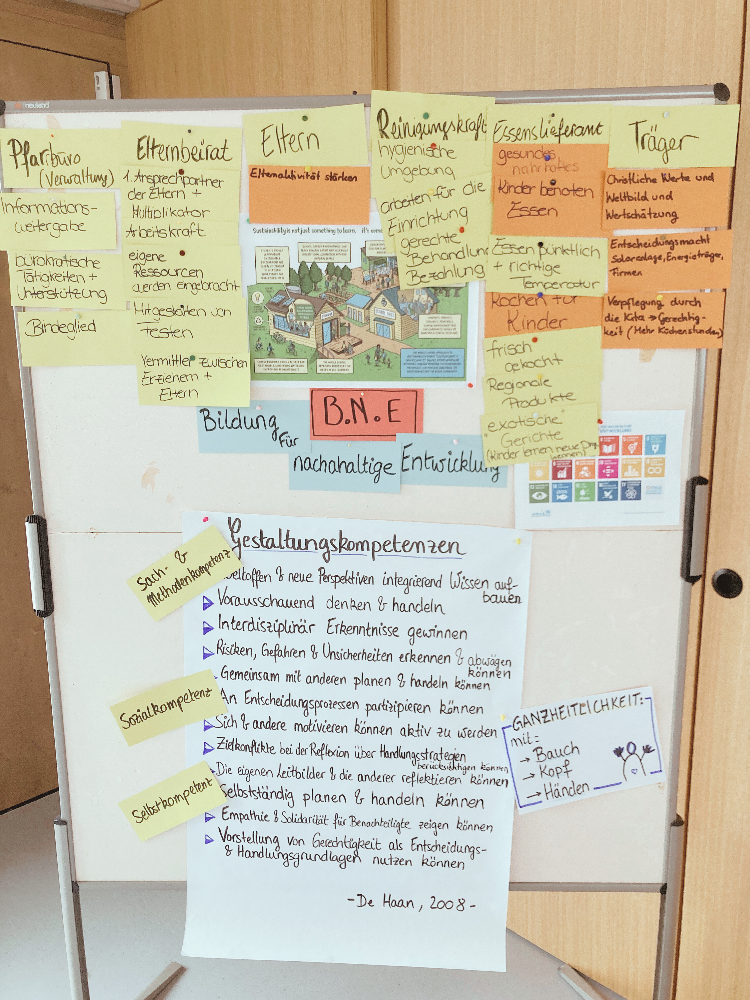
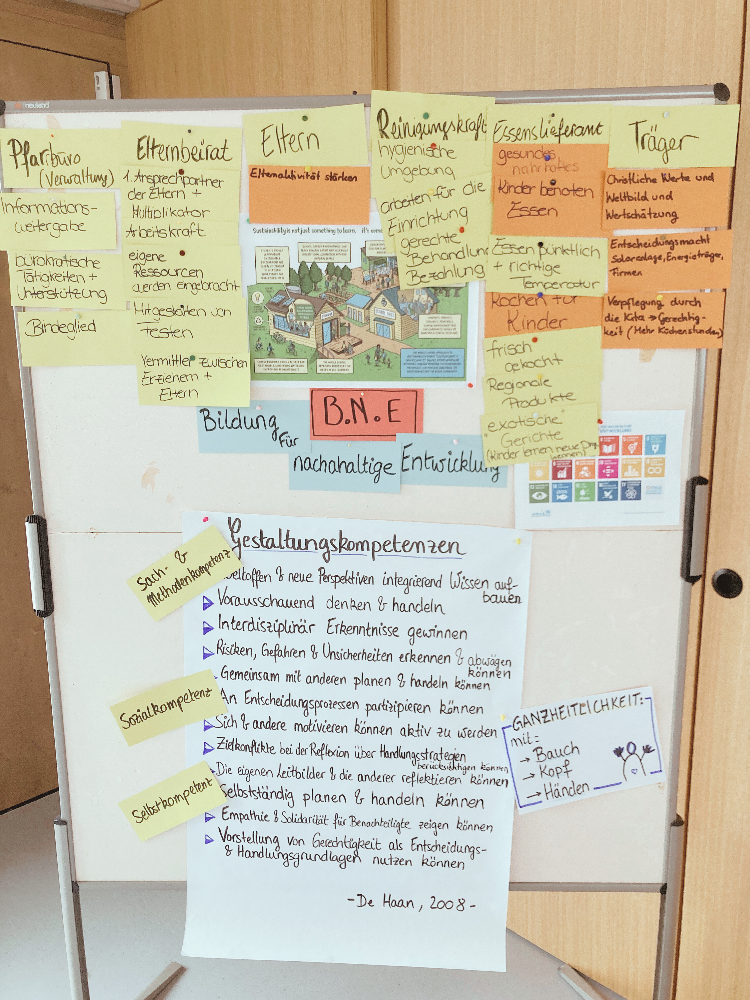

Language
In this workshop, the participants learned about the Sustainable Development Goals (SDGs) and reflected on their meaning for in their own lives. The aim was to promote the exchange of personal values in the area of sustainability and to develop individual strategies for sustainable action. The workshop began with an introductory round using Dixit cards to explore the participants' ideas and prior knowledge about sustainability. With the help of SDG dice, the participants worked on specific sustainabiity goals and developped concrete approaches for their implementation in everyday life. The workshop offered participants an inspiring mix of reflection and practical application to make sustainability individual and tangible.

As part of a Juleica (Training for volunteers working with youth) organized by the Kreisjugendring München-Land, I gave a workshop that focused on the introduction to the Sustainable Development Goals (SDGs) and Education for Sustainable Development (E.S.D.) for future youth leaders. During the workshop, the participants evaluated the current implementation of E.S.D. in their organization. Another focus was on sharing experiences to raise awareness of sustainability in their work and promote sustainable practices.
As part of a German-French exchange on the topic of major sport events and urban development, organized by dock europe e.V., a workshop was offered on the topics of the Olympic Games and sustainability. The workshop took place in Hamburg and was held in two languages: French and German, with simultaneous translation. The participants had the opportunity to learn about the existing international development goals after working on the development of their ideal city. They discovered that sustainability encompasses many areas that are all interconnected. Based on this knowledge, they were invited to reflect on the pros and cons of the Olympic Games in the context of sustainability and urban development. Methods such as the SDGs network and the writing conversation were used in the workshop.

As part of a project day at a secondary school in Munich with the motto “We are strong because we are different”, I offered the workshop “Diversity is sustainable!” on the topic of social sustainability: This workshop covered various topics, including the general meaning of sustainability and the connection of diversity and other social issues with sustainability. The pupils had the opportunity to discuss the extent to which their school is already socially sustainable and were able to formulate wishes for a stronger culture of diversity at their school. Activities on the Sustainable Development Goals (SDGs) and a school detective game were used as methods.
 

For the Caritas, I offered a training course on Education for Sustainable Development (ESD) for employees of a daycare center: Various topics were covered, including the importance of ESD, the Whole Institution Approach and the implementation of a Whole Kindergarten Approach. The individual environment and the daycare center's network were also analyzed in order to use existing resources and develop future changes. The project included team discussions about fears and hopes regarding the sustainable development of the kindergarten. Motivational and creative methods were used, some of which also served as examples for activities with children and were accompanied by pedagogical reflection.